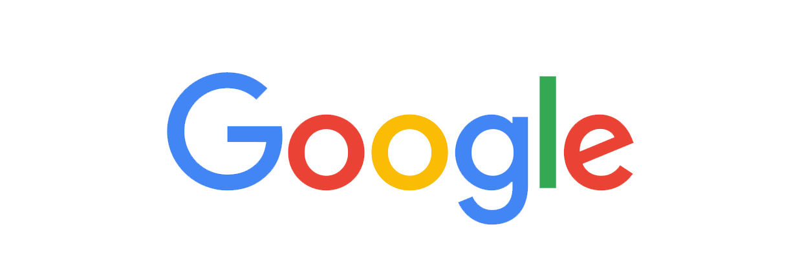

Google: Re-Designed
Published: 4th September, 2015
Google has been evolving for over 17 years and last week they revealed their new logo. However, with many people not noticing the change or caring about it, was the re-design really necessary?

Personally, I believe so as they've managed to develop their brand by combining multiple elements in their identity for different services and platforms. These elements include The Google Logotype, The Dots and The Google G.
The little changes Google has made over the years is what I really like about the process in how Google has evolved their brand. These small changes have impacted the look and feel of the tools and services created and provided by them as well as the experience we get.
All of these elements are used within their brand to achieve their goal of taking the world’s information and making it universally accessible and useful.
The video below is created by Google explaining the evolution of the Google brand over the past 17 years.
To conclude I believe that through all of this Google has yet again improved their brand as well as helping us understand Google more through design and interaction.
What are your thoughts on the new Google Logo? Let me know in the comments below.